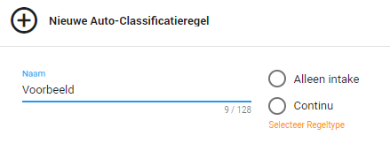

In het volgende overzicht kunt u de nieuwe regel een naam geven. U kunt ervoor kiezen om de documenten alleen automatisch te labelen wanneer deze geüpload worden (Alleen intake) of u kunt ervoor kiezen dat er altijd gekeken wordt of een document voldoet aan de voorwaarden (Continu). Mocht een document op een later moment toch aan de door u opgestelde vereisten voldoen, dan zal deze alsnog gelabeld worden.

Er zijn twee soorten regels, een regel die wordt uitgevoerd als een document in het systeem wordt gezet en een regel die continu wordt uitgevoerd. Een aantal regels zijn standaard al geconfigureerd, zoals regels om email te classificeren.
Zodra een van de twee mogelijkheden is aangevinkt verschijnt er een nieuw overzicht, zie Uitleg 2 hieronder. Bij 1 typt u uw vereiste, meer informatie over de zoekbalk vindt u bij Uitleg 1 in het topic Zoekopdrachten. Bij 3 klikt u vervolgens aan welk label het document moet krijgen als hij aan de vereisten voldoet die u bij 1 hebt ingetypt. Bij 2 kunt u nog extra vereisten toevoegen. Bijvoorbeeld, wanneer de waarde in het veld Created minder of gelijk is aan een bepaalde datum.
|
Uitleg 2 - Auto-Classificatie
|